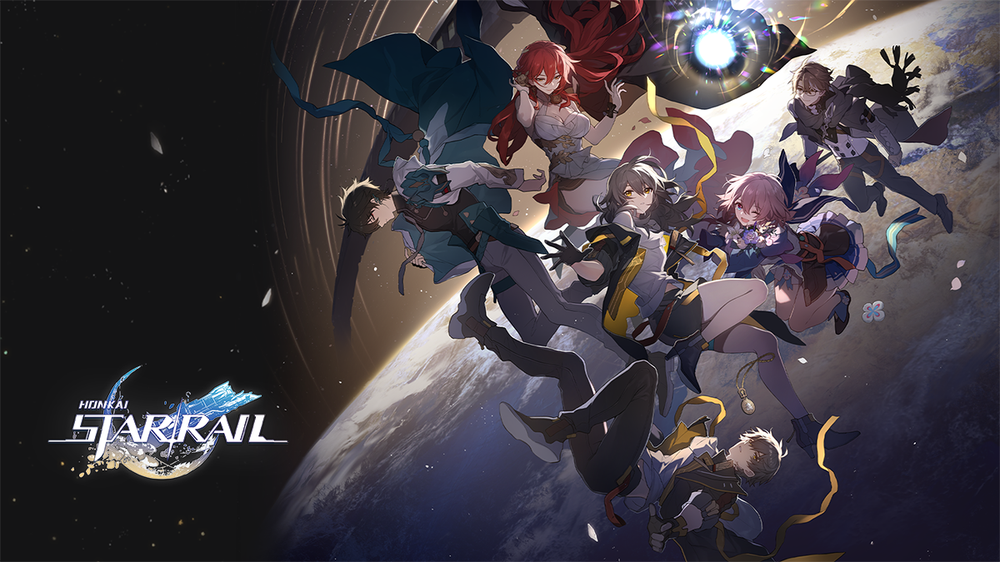
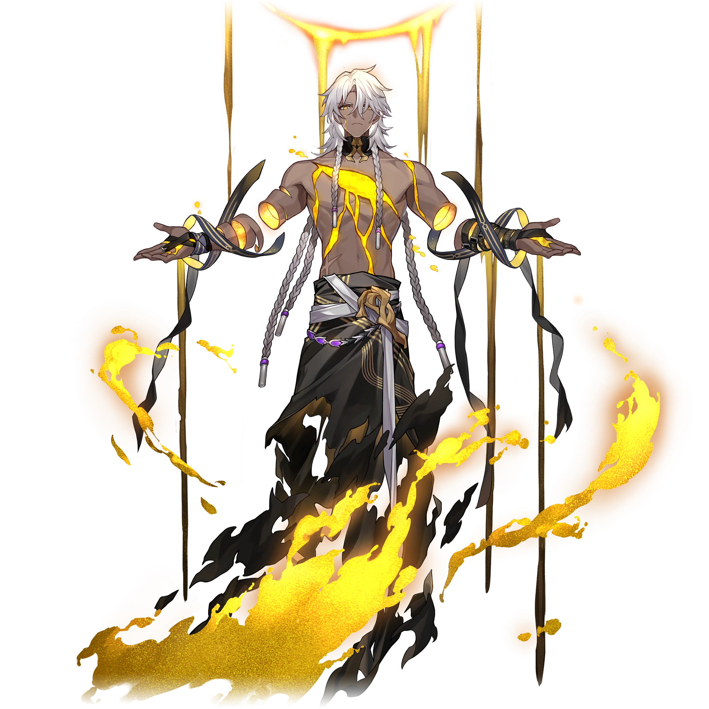
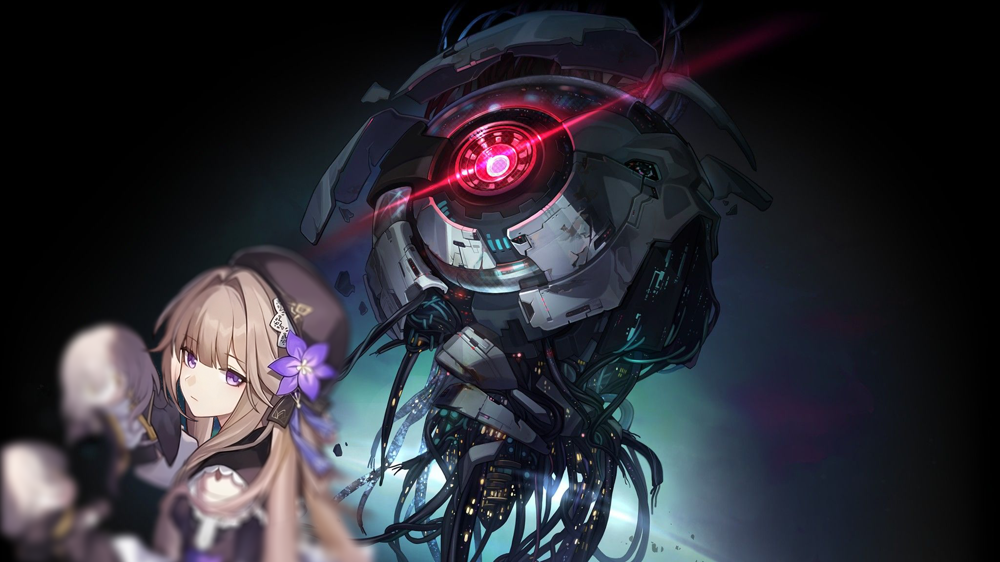

ปฐมบทเนื้อเรื่อง Honkai: Star Rail รู้จักโลกและเทพดารา
Honkai: Star Rail ผลงานเกมตัวล่าสุดประจำปี 2023 จาก HoYoverse ได้ออกมาให้เราได้เล่นกัน และแม้ว่าตอนนี้เนื้อเรื่องจะยังไปได้ไม่ไกล แต่เนื้อหาและความกว้างใหญ่ของโลก (ที่ต้องเรียกว่าจักรวาล) นั้น มีความยิ่งใหญ่มาก ดังนั้นวันนี้ นี่จะเป็นการเปิดโลกและความเข้าใจของผู้เล่นและผู้บุกเบิกทุกคน ให้ได้เข้าใจโลกและสิ่งต่าง ๆ ภายในเกมนี้มากยิ่งขึ้น
ทำความรู้จัก โลกของ Honkai: Star Rail
ในโลกของ Honkai: Star Rail นั้น คนธรรมดามักจะย่างก้าวเข้าไปใน Path หรือเส้นทางที่มี “เทพดารา” ควบคุมอยู่ ไม่ว่าจะโดยตั้งใจหรือไม่ก็ตาม คนเหล่านี้จะถูกเรียกว่า Pathstrider หรือผู้บุกเบิกตามแนวคิดของเทพดาราเหล่านั้น เหล่า Pathstrider แสดงถึงชีวิตของผู้คนหลากหลายรูปแบบ และพบเห็นได้ทั่วไป แต่ก็จะโดดเด่นกว่าคนอื่น ๆ คนกลุ่มนี้ถูกขับเคลื่อนด้วยศรัทธาหรือความปรารถนาบางอย่างของตัวเอง จนก้าวเข้าสู่เส้นทางที่มีทั้งความยึดมั่นและยากลำบาก และเอาจริง ๆ เทพดาราก็ไม่ค่อยจะสนใจคนที่มาเดินทางบนเส้นทางเหล่านี้ด้วย เพียงแต่พวกเขาเหลือบมองมาด้วยความชมเชยหรือเวทนาบ้างเป็นครั้งคราว แต่เท่านี้ก็เพียงพอที่จะทำให้เหล่าผู้ติดตาม ยกย่องว่าเป็นสิ่งล้ำค่าได้แล้ว
เหล่าเทพดารา (Aeons)
เทพดารายังคงเป็นสิ่งที่คลุมเครือและไม่ชัดเจน มนุษย์รับรู้เรื่องราวของสิ่งมีชีวิตลึกลับที่ท่องอยู่ในทะเลดวงดาวเหล่านี้น้อยมาก และเพราะความรู้ที่จำกัด จึงเกิดความเข้าใจอย่างคลุมเครือว่าเทพดารานั้น ก้าวเดินอยู่บนเส้นทางที่มนุษย์ทั่วไปไม่อาจมองเห็น จากนั้นอาศัยแนวคิดและทฤษฎีบางอย่าง เพื่อทำความเข้าใจถึงพลังอันยิ่งใหญ่ ทำให้สุดท้าย เทพดาราจึงกลายเป็นศูนย์รวมของแนวคิดทางปรัชญาขั้นสูง ผ่านตำนานเล่าขานแบบปากต่อปากของผู้คน
Emanator คืออะไร ?
Emenator เปรียบเสมือนทูตผู้ถ่ายทอดเจตจำนงของเทพดารา คือมนุษย์ส่วนน้อยที่ได้รับความโปรดปรานจากเทพดาราและได้รับอนุญาตให้ดูดซับพลังงานจาก Path นั้น ๆ ได้ เทพดาราแต่ละตนก็มีทัศนคติต่อ Emanator ไม่เหมือนกัน ระดับการแบ่งพลังให้จึงต่างกัน เทพบางตนก็มองว่า Emanator คือแขนขา และมอบพลังให้อย่างใจกว้าง หรือบางตนก็แค่อยากเล่นสนุกเท่านั้นเช่น Aha ที่สุ่มมอบพลังให้กับมนุษย์
